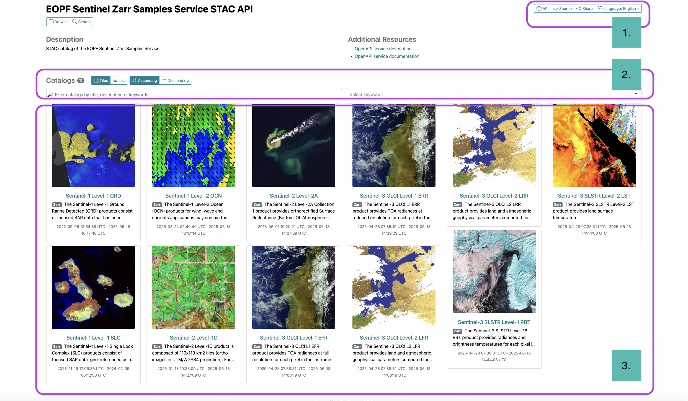
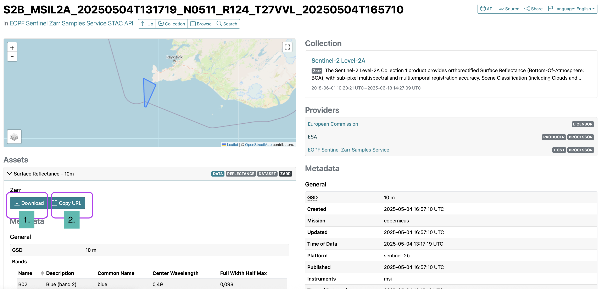

Explore the web interface of the EOPF Zarr STAC Catalog
Introduction
This section introduces you to the EOPF Sentinel Zarr Samples Service STAC Catalog, which offers access to the re-engineered Sentinel-1, Sentinel-2 and Sentinel-3 data products. We will guide you through its web interface, inspect the various levels of STAC components, and demonstrate how to access the underlying Sentinel Zarr data.
What we will learn
- ⚙️ How does the STAC browser interface work
- üî¶ Explore the available Collections within the EOPF Sentinel Zarr Samples Service STAC Catalog
- üì° How to obtain access to EOPF Sentinel Zarr products from the EOPF Sentinel Zarr Samples Service STAC Catalog
Our Starting Point
The first step is to access the main homepage of the EOPF Sentinel Zarr Samples Service STAC Catalog. The landing page offers you a comprehensive overview of the available data collections. This serves as our initial entry point into the catalog.

Three main areas can be identified: (i) the API and URL section, (ii) Search bar and (iii) Collections Display.
As outlined in detail in the book section The EOPF Available Datasets, the catalog displays the 11 distinct collections available from the Sentinel-1, Sentinel-2, and Sentinel-3 missions.
The user interface provides an intuitive way to browse through all of these collections. It is possible to filter them by specific criteria or select them manually, allowing precise control over the displayed data.
Exploring Sentinel Collections
Let us now select one of the 11 Collection available, e.g. let us select the Sentinel 2-Level-2A collection. Once you have selected the Collection, you will be directed to the interface of a specific Collection.
The interface can be divided into five principal sections:
- Description: The name and a brief introduction to the available collection. This includes crucial details such as the temporal extent (the period over which the data was acquired)
- API and URL: for further application.
- Spatial Extent: The geographical area of the displayed items is shown on the map.
- Available Items: On the right-hand side of the page, a list of links for the items contained within the collection corresponds to the selected collection.
- Collection Metadata: A general overview of the Collection’s metadata, its providers, instruments, and the corresponding DOIs for research.
- Metadata: Specific information about the bands and instruments, such as backscatter or reflectance information.
- Assets in Items: The Assets structure is available for the Items available in the Collection.
Filtering Collections
Any selected Collection (in this case Sentinel-2 Level-2A) allows us to filter the items of our interest by temporal and spatial extent. We can access this tab by clicking on Show Filters on the right side under the Items section.
The interface that opens allows us to select on the calendar a specific period we are interested in. This is particularly useful when we are interested in a temporal analysis. Let us search over the available items captured between May 1st and May 5th 2024.
Additionally, we can select a location we are interested in by checking the Filter by spatial extent box. This allows us to refine our search over an area of interest. Once you tick the box, a map activates and allows us to draw a bounding box that we can drag and drop. Let us select Europe as our area of interest.
Once we select the desired period and area via the filters, we can sort the items that match our search by ID, Date and Time, or select the number of resulting items we are interested in per page. In this case, we select 2, so the overview is digestible. Then, we click Submit.
Under the window, we can now see that two items appear. For example:
S2B_MSIL2A_20250504T131719_N0511_R124_T27VVL_20250504T165710
We can select any of the resulting items, and this will enable us to access an Item inside the Collection.
Exploring Items
When a specific Item sparks our interest, clicking on it will bring us to a detailed overview page for that selected Item.
This Item interface is composed of:
- Description: The name of the
Item. Depending on the mission and collection it belongs to, the composition of the name changes. - Spatial Extent: The geographical footprint of the selected
Itemis shown on the map. - Collection Metadata: A general overview of the Collection’s metadata, its providers, instruments, resolution, grid and the corresponding DOIs for research.
- API and URL: Allows the entry point for further retrieval of the individual assets.
- Assets menu: lists all the
Assetsthat are part of the selectedItem.
At this level of the STAC structure, we are already diving deep into the STAC levels, and have explored the Catalog, Collection and Item components described in the Introduction to STAC section.
Assets
Inside the selected Item, we will get an overview of the available Assets that belong to the Item. By expanding the dropdown menu for any Asset of interest, you can access its specific metadata and, most importantly, the actual data.
In the case of the Sentinel-2 Level-2A collection, each asset corresponds to one of the 13 spectral bands available. The array information provides details about the structure and content of the data, hinting at the actual values contained within the asset. It also contains the chunking grid specification and all the crucial metadata necessary to structure and process the data through a wide range of geospatial methodologies.
Accessing Assets
For direct data access of Assets and therefore the actual data, there are two options provided via the web interface: * Download: It is possible to download only one asset separately in .zarr format by clicking the Download option associated with an Asset, and * Copy URL: We can also retrieve the unique URL of the specified Asset, which allows us to directly integrate the link into programmatic workflows, without the need to download the Asset. We can get it by simply clicking on the Copy URL option under the Asset of our interest.

üí™ Now it is your turn
Your task now is to explore the web interface of the EOPF Sentinel Zarr Samples Service STAC Catalog on your own and explore other Collections than the one we showcased.
Task 1: Discover Sentinel-1 GRD Data
Navigate to the Sentinel-1 Level-1 GRD Collection.
- How many items can you find for the most recent two years available in the catalogue?
- Try filtering by different periods and observe how the results change. How many items are available for September 2023?
Task 2: Mapping Your Interests
Explore the interactive map within the Sentinel-1 Level-1 GRD and the Sentinel-2 Level-2A collections.
- Can you identify and list the names of at least three distinct geographical areas where a significant number of items are available? (Hint: Look for clusters of the displayed items!)
Task 3: Unpacking an Asset
Select an item from any collection that looks interesting to you. Click on it to view its details. Then, expand one of the assets.
- What kind of array information is provided?
- Who is the data provider?
- How would this information be useful if you were to process this data?
Conclusion
This section walked you through the web interface of the EOPF Sentinel Zarr Samples Service STAC Catalog. We have demonstrated how to navigate its interface, from the initial overview of the available Collections to the detailed inspection of specific Items and Assets. By understanding the structure and components of a STAC catalog, we are able to efficiently access re-engineered EOPF Zarr assets.
What’s next?
In the next section, we will explore how to programmatically connect to and search through the EOPF Sentinel Zarr Samples Service STAC API with the help of the pystac and the pystac-client Python libraries.